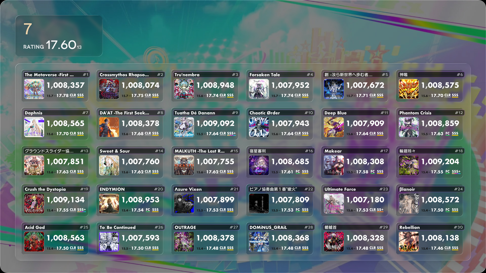
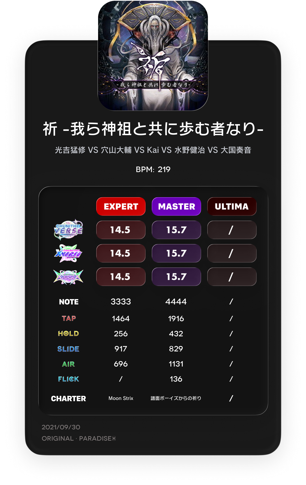

現在の主力プロジェクト
CHUNITHM Bot System
CHUNITHM を中心にした個人プロジェクト。QQ 上で動作する Bot と、 それに紐づく画像レンダリング、譜面表示、レベル進捗、許容値分析、データ同期処理をまとめて扱っています。
Python
描画
QQ Bot
データ処理
個人サイト
Bot、画像レンダリング、音楽ゲーム向けツール、個人 Web サイト制作など、 自分が面白いと思うものを少しずつ形にしている個人ページです。 ここでは最近の制作物、考えていること、興味のある分野をまとめています。
音楽ゲーム向けの視覚的なツール、Bot、画像ベースの UI、個人用システム制作が好きです。
現在の主な制作物
QQ Bot、画像生成、譜面プレビュー、データ同期をひとつにつなげた個人プロジェクト。 いま一番長く手を入れている制作物です。
自己紹介
小さなスクリプトや素材で終わらせず、実際に動くもの、見せられるものまで仕上げるのが好きです。 最近は音楽ゲーム向け補助ツール、画像を中心にした情報表示、Bot 体験の設計、個人 Web サイトづくりに関心があります。
プロジェクト

現在の主力プロジェクト
CHUNITHM を中心にした個人プロジェクト。QQ 上で動作する Bot と、 それに紐づく画像レンダリング、譜面表示、レベル進捗、許容値分析、データ同期処理をまとめて扱っています。

描画
曲名、BPM、アーティスト、カテゴリ、ジャケットを一枚にまとめる情報カード。 Bot の結果表示としても、Web の見せ方としても使える形を目指しています。

可視化
譜面ファイルの取得、キャッシュ、変換、送信までをまとめたプレビュー表示フロー。 高画質での確認体験を重視しています。
興味
システムメモ
動画
今後、自作譜面、音楽ゲーム手元、制作物の動作紹介などをこのページからまとめて見られるようにする予定です。 まずは個人サイトの基礎を整え、あとから動画アーカイブとして育てていく想定です。
ブログ
更新ログ、制作メモ、詰まった点、設計の考えなどを後から残せるように、 ブログ枠も先に用意しています。今はまだ簡易的な紹介だけですが、少しずつ増やしていく予定です。
連絡先